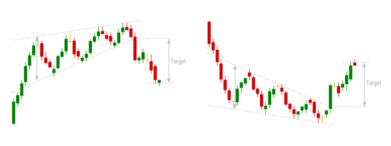
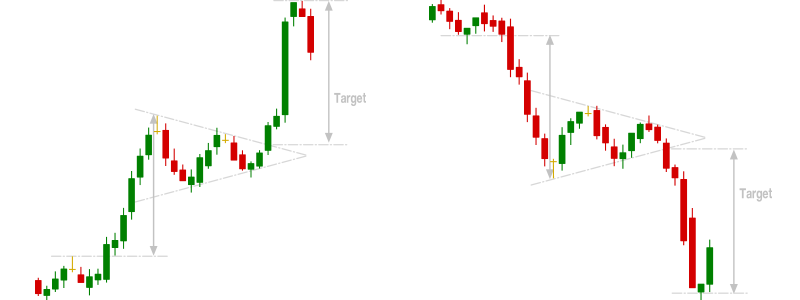
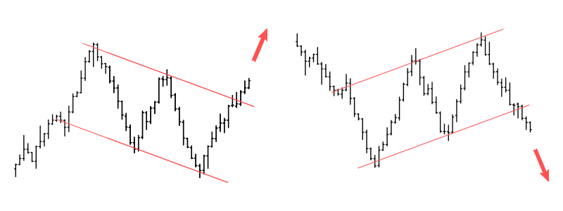
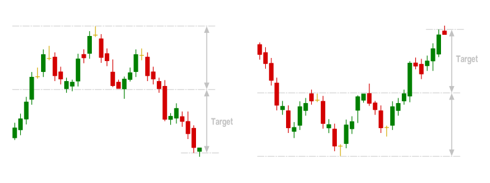
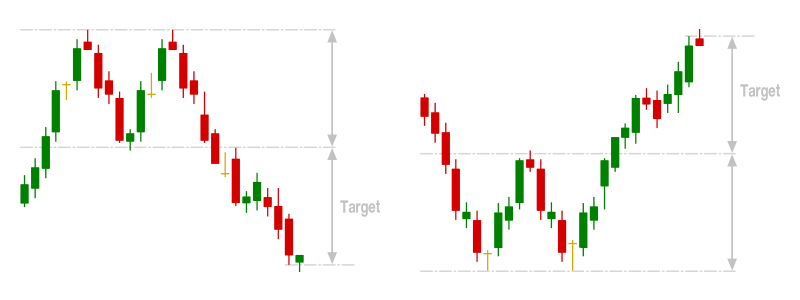
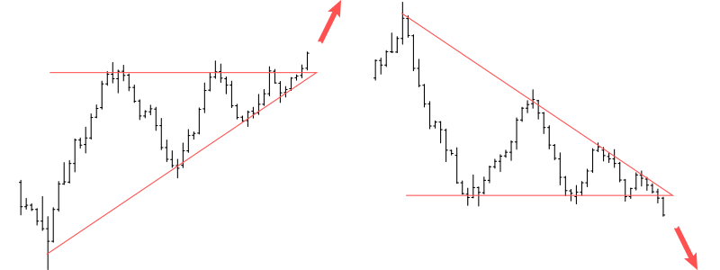

一、什么是图表模式？
如果
外汇交易市场是一片丛林，那么图表形态就是引导投资者获得交易机会的最终路径。在外汇市场上交易金融资产时，利润（或损失）是由价格变动产生的。
价格变化通常使用烛台来表示，并且在一系列时间段之后，烛台模式会在图表上形成，以讲述基础资产的价格走势。
图表形态是进行
外汇技术分析的有力工具，因为它们代表原始价格走势，并帮助交易者感受到市场的情绪和情绪。
它们实质上使交易者能够驾驭市场浪潮，并且当他们被很好地理解和解释时，可以帮助您以最小的风险敞口挑选有利可图的交易机会。
二、外汇图表形态的类型
图表模式根据它们提供给交易者的信号或方向提示进行分类。这是三种图表模式：
1.连续图模式
连续图表模式是在持续趋势中形成的，它们表明主导趋势将继续。延续图表模式通常发生在价格巩固期间，并为交易者提供了在主导趋势方向上开仓的巨大机会。
最常见的连续图模式包括方向楔形，标志和三角旗。这些模式以回撤方式建立，并且在主要趋势方向上的突破确认暂时回调已经结束。
1）定向楔

方向楔可以传递反向信号。下降楔形形成在下降趋势的底部，而上升楔形形成在上升趋势的顶部。
当市场正在巩固时，定向楔形通知多头和空头之间的斗争。例如，下降趋势中的上升楔形表明购买者正在积极推动价格上涨，但是与形成较高的高点相比，它们形成较高的低点的速度更快。这是买家疲惫的信号，价格可能会跌破以恢复下降趋势。
2）三角旗

三角旗通常预示着强劲趋势中的小停顿。它们以三角形的形式形成，但是它们非常简短，所产生的移动与三角旗形成之前的移动重复。在上升趋势中，小幅整理之后会形成牛市三角旗，多头强烈希望将价格推高。这将是一个信号，表明多头被冲高了又一个强劲的推动力。
3）标志

价格在急剧趋势移动后整固时形成标志。先前的急剧趋势走势被称为旗杆。在上升趋势中，当价格通过形成较低的高点和较低的低点来进行巩固以表示一定时期的获利了结时，就会形成一个标志形态。突破下降趋势线上方将表明多头已准备好为下一阶段推高价格。
延续图表模式为交易者提供了低风险，最佳价格进入点，以加入主导趋势的方向。
2.反转图模式
当主要趋势即将改变方向时，将形成反转图表模式。图表模式表明主要趋势的动能已经减弱，市场即将扭转。
如果有上升趋势，则反转图表将表明市场即将下跌。同样，下降趋势中的反转图表模式表明市场即将上涨。
最常见的反转图表形态包括直的和反转的头和肩膀，双顶和双底，下降和上升楔形以及三重顶和三重底。趋势图周期延长，信号价格耗尽和动量损失之后，便会出现反转图表形态。
1）头肩图案

甲直头和肩膀在上升趋势图案形成时的价格使得三个高：所述第一和所述第三高点的高度（台肩）几乎相同，而第二高较高（头）。画一条领口以连接由地层形成的槽的最低点。当价格跌破领口时，领口与“头部”之间的距离即为目标价格。甲反向头部和肩部的形式在下降，与所述第二低比所述第一和第三低点更低。目标价格将是价格突破颈线时颈线与头部之间的距离。
2）双顶双底

价格在强势走势之后形成两个峰值或谷值之后，形成双顶和双底。它们预示着价格疲惫，以及市场希望扭转当前趋势的愿望。当交易最高点和最低点时，价格目标等于形成的高度。
3）三重上衣和三重下装
类似地，在强劲的趋势移动之后，价格达到三个峰值或谷值之后，形成了三个顶部和三个底部。它们也预示着主导趋势的消退势头以及市场改变方向的愿望。领口被突破时，形态的高度还用作反转的价格目标。
重要的是要注意，反转图模式需要耐心，因为它们通常需要很长时间才能显示出来。这主要是因为需要坚定信念，投资者才能完全支持相反的趋势。
3.中性图表模式
中性图表模式同时出现在趋势市场和区间市场中，并且不提供任何方向性提示。中性图表模式表明市场将发生重大变化，交易者应期望价格向任一方向突破。
1）对称三角形

对称三角形是一些最常见的中性图模式。当价格形成较低的高点和较高的低点时，将形成对称的图表模式。高点和低点的斜率会聚成一个三角形。形成表明，多头和空头都无法施加足够的压力来形成确定的趋势。
没有哪个集团可以占上风，随着价格的趋同，其中一个可能不得不屈服。随着价格的趋同，买卖双方之间相互竞争。如果买家获胜，价格将向上突破；如果卖方获胜，价格将下跌。交易者观看无方向偏向的中性图表形态并寻求加入新趋势的势头。
三、如何使用图表模式进行交易
图表模式是市场中实时需求和供应的图形表示。图表模式允许交易者通过启用以下功能来增强其交易活动：
1.评估形成信号的风险/回报比率
图表模式具有确定的形成和对潜在未来价格行为的预期。这意味着，当形成图表形态时，后续的价格操作将确定这是交易还是持有头寸的有效或无效机会。每个图表模式都有定义的规则，这有助于事先确定风险/回报率。例如，当头和肩图形形成上升趋势时，预期向下运动的初始目标是一个点数，该点数等于“领口”和“头顶”之间的距离。止损可以放在“肩膀”上方。借助这些信息，交易者可以评估是否出现任何交易机会值得交易。
2.根据价格行为
开仓价格行为通常被定义为货币的足迹。价格行为交易者阅读和解释原始价格行为，并在出现交易机会时识别它们。价格行动虽然仍然是技术分析的一种形式，但它涉及使用干净的或“裸露”的图表；没有指标使图表混乱。交易图表模式是价格行为分析的最高形式，它可以帮助交易者跟踪趋势并绘制最终的支撑和阻力区域。与本质上落后的众多技术分析指标不同，图表模式实际上是领先的，并允许交易者有效而高效地把握市场机会。这意味着交易者能够足够早地以最佳价格在市场上买卖订单。
3.设置条件订单的价格目标
条件订单是特殊的
外汇订单类型，其中附加了必须在市场上执行之前必须满足的特殊参数。最常见和基本的条件订单包括
限价单，
止损单和止损限价单。还有其他更高级（但较不常见）的条件订单，包括GTC（有效期至取消），GTD（有效期至日期）和OCO（一个取消了另一个）。有条件的订单已经定义了价格目标，它们可以帮助交易者管理风险，建立头寸以及确保利润。如上所述，图表模式通常基于规则，并在形成时具有特定的价格目标。这使图表模式成为交易有条件定单的理想分析类型，条件定单的目标是特定的价格水平。
4.适应不断变化的市场条件
如上所述，使用图表模式进行交易意味着交易者可以跟踪资产的原始价格行为。图表模式可以轻松确定或确认市场状况何时意外发生变化。及早发现市场条件的变化可以帮助交易者锁定利润或限制损失。它还可以帮助交易员更早地进入与新趋势一致的交易头寸。市场状况的变化是市场风险的自然来源，但图表模式可确保它们是巨大机会的来源。
想要使用这些图表进行外汇交易吗？请使用AvaTrade爱华提供的真实账户。
四、使用图表模式进行交易的缺点
尽管外汇图表模式具有优势，但它们并非没有缺点（就像其他任何投资或
交易策略一样）。以下是一些缺点：
1.图表模式可能会传递错误信号
图表模式无法100％地起作用。这意味着可以被认为是有效图表模式的内容可能会以预期之外的方式播放。因此，重要的是交易者只能利用风险/回报率足够引人注目的机会。
2.图表模式可以激发主观性
图表模式可以使交易者获得市场的“感觉”。尽管这非常重要，但存在固有的危险，即交易者在寻求交易图表模式时变得更加主观而非客观。有数百种图表形态，交易者在确定随着价格走势发挥作用而形成或将形成何种形态时可能会产生主观偏见。主观交易更加危险，因为交易者越来越受到一般准则的指导，而不是客观交易的严格的基于规则的系统指导。同样，一个交易者可能将图表模式视为延续模式，而另一交易者可能将其视为反转形态并以完全不同的方式进行交易。
3.图表模式有时可能需要很长时间才能形成
耐心对投资者来说是一个很大的优点，在交易图表模式时更是如此。由图表模式生成的高概率信号可能需要花费几个时间周期才能确定。这可能在心理上造成负担，因为交易员观察到价格走势正在发挥作用，他们可能会觉得好像有些利润留在桌上了。
4.大多数图表模式仅对短期有效
大多数图表模式提供的信号仅在有限的时间段内有效。这意味着交易者只有很小的机会窗口可以利用图表模式生成的信号。轻微的延迟可能意味着
交易信号不再提供有吸引力的风险/回报主张。
快点开启你的外汇交易之路吧！选择多重外汇监管的AvaTrade爱华平台，是你不错的选择。
五、有效交易图表模式的技巧
图表模式提供了一种有效的方式来跟踪市场价格行为，以识别有利可图的交易机会。以下是一些充分利用外汇图表形态的技巧：
1.切换到折线图折线
图模式可以提供高质量的交易信号，但您必须首先能够找到它们。这可能并不复杂，但是由于在较晚时识别图表模式可能会导致结果低于期望的结果，因此重要的是设计一种尽早确定其形成方式。这就是为什么交易者希望确认图表模式正在形成时应切换到折线图的原因。折线图可以在这方面提供帮助，因为它们可以平滑和简化价格操作，并且可以轻松地尽早确认图表模式以进行正确的交易。
2.使用烛台模式确认图表模式信号
图表模式是一种出色的价格操作技术，烛台模式可以更好地限定其提供的信号，这也有助于分析市场的原始价格走势。如果与烛台图案汇合，例如针形，Marubozu，陀螺和十字星，则图表形态将更为合格。虽然图表形态需要较长的时间来开发，但烛形形态可能只需要一个或两个时间周期即可形成，并且可以帮助图表形态交易者挑选出市场中优质的，早期进入和退出的交易机会。
3.将图表模式与技术指标结合起来图表模式
不会落后于价格走势；这可能是一件好事，但危险在于早期的价格行动信号可能非常不稳定。大多数技术分析指标滞后于价格走势，并且与图表模式分析结合使用时，它们会确认可靠的信号，这些信号可以被市场中的交易者积极交易。例如，当价格突破对称三角形并且指标（例如DAX）确认有足够的动力来支撑方向性波动时，交易者可以采取激进的交易头寸。
4.使用条件订单交易图表模式
是交易图表模式的重要方面。这就是为什么有条件订单（例如止损订单和限价订单）提供了最佳方法来利用图表模式创建的交易机会的原因。例如，当价格在上升趋势（延续模式）期间以看涨的标志形态巩固时，交易者可以下达止损定单，当趋势方向出现突破时，定单将被填补。这将确保交易者尽快恢复牛市趋势。
六、最后的话
图表模式提供了一种跟踪市场价格变化的可靠方法。它们可帮助交易者确定当前的市场状况（现有趋势以及关键的支撑和阻力位）。图表模式还有助于预测市场状况的可能变化，并提供一种利用产生的贸易机会的客观方法。尽管它们提供了令人信服的交易信号，但是在交易图表模式时，必须严格执行风险管理，因为它们并非100％可靠。
因此，图表模式交易信号应始终与确定的价格目标和止损订单进行交易，以限制风险敞口并增加获利机会。将图表模式与其他分析技术（例如技术指标和烛形模式）组合以限制所生成的交易信号也是谨慎的。这将有助于减轻图表模式的缺点，例如错误信号和主观偏见。
总体而言，图表模式的优点远大于缺点。由于市场上可以形成多种图表形态，交易者应寻求建立和改进其交易知识和技能，以便他们可以准确地识别和充分利用图表形态所提供的交易机会。如果了解得很好，则图表模式有可能在任何给定时间在任何市场中产生稳定的利润丰厚的交易机会。在AvaTrade爱华，您可以使用MT4模拟账户来学习如何识别图表模式，而不会冒任何交易资金的风险。
**免责声明– 尽管已对上述内容进行了适当的研究，但其仍只是提供信息和教育的内容。提供的内容均不构成任何形式的投资建议。